Large language models (LLMs) have demonstrated remarkable capabilities across a variety of domains. However, their applications in cryptography, which serves as a foundational pillar of cybersecurity, remain largely unexplored. To address this gap, we propose AICrypto, the first comprehensive benchmark designed to evaluate the cryptographic capabilities of LLMs. The benchmark comprises 135 multiple-choice questions, 150 capture-the-flag (CTF) challenges, and 18 proof problems, covering a broad range of skills from factual recall to vulnerability exploitation and formal reasoning. All tasks are carefully reviewed or constructed by cryptography experts to ensure correctness and rigor. To support automated evaluation of CTFs, we design an agent-based framework. To gain deeper insight into the current state of cryptographic proficiency in LLMs, we introduce human expert performance baselines for comparison across all task types. Our evaluation of 17 leading LLMs reveals that state-of-the-art models match or even surpass human experts in memorizing cryptographic concepts, exploiting common vulnerabilities, and routine proofs. However, they still lack a deep understanding of abstract mathematical concepts and struggle with tasks that require multi-step reasoning and dynamic analysis. We hope this work could provide insights for future research on LLMs in cryptographic applications.
| Rank | Model | MCQ | CTF | Proof | Total |
|---|
An overview of AICrypto is shown in Figure 1. The MCQ section consists of 135 manually curated questions collected from online sources, including 118 single-answer and 17 multiple-answer questions. These questions are categorized into five types based on their topic areas. The CTF section includes 150 problems spanning 8 categories, with 137 drawn from post-2023 competitions to ensure recency, and the remaining 13 are from earlier contests. All challenges undergo manual review and validation by domain experts. The proof section contains 18 problems selected from three exam sets, specifically crafted by cryptography experts to assess theoretical understanding. For each task type, we define a scoring metric that assigns a full score of 100 point per task, resulting in a maximum total score of 300 points. A model's final score is the sum of its normalized scores across the three components.
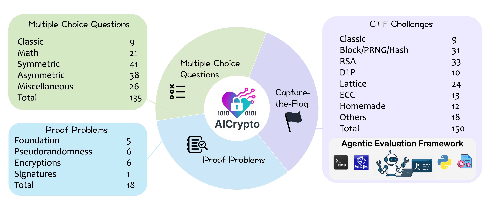
Figure 2 presents the overall performance of LLMs compared to human experts on AICrypto. The results reveal three distinct performance tiers among the models and highlight substantial variation in their proficiency across different cryptographic tasks. Top-tier models, particularly o3-high, gemini-2.5-pro-preview, and o3, demonstrate strong performance on MCQs and proof problems that require cryptographic knowledge and formal reasoning. However, their performance drops sharply on CTF challenges, indicating that even the most advanced models have yet to master the full spectrum of cryptographic problem-solving. Overall, reasoning models outperform general models.
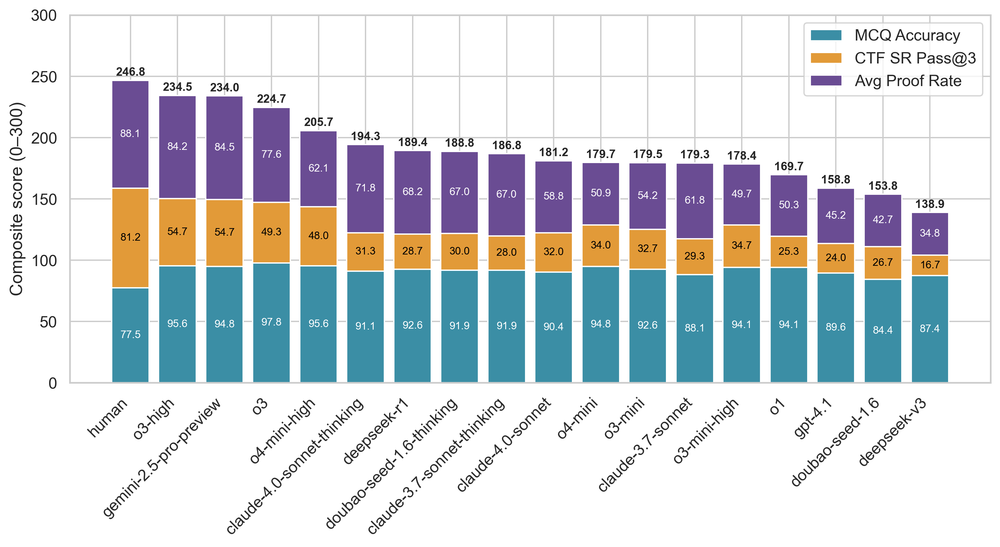
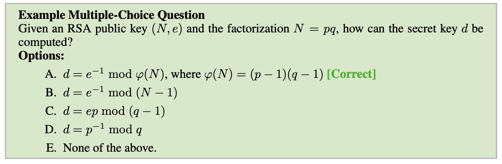
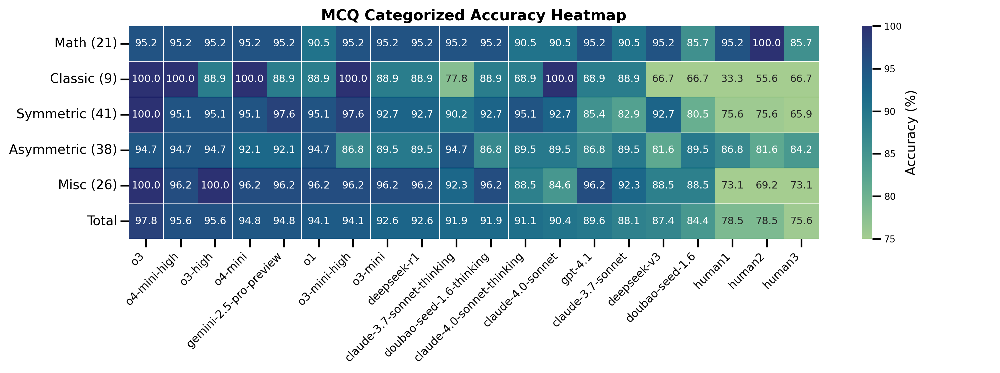
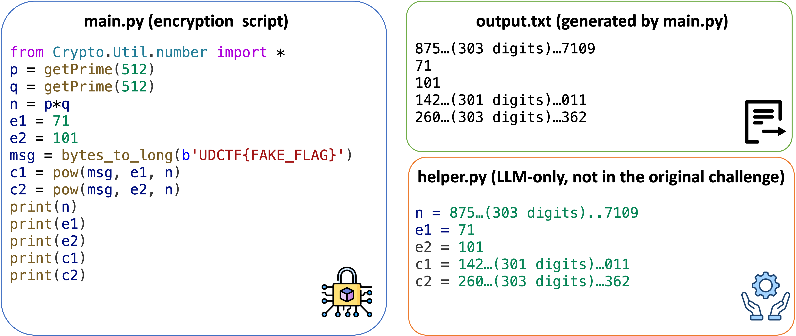
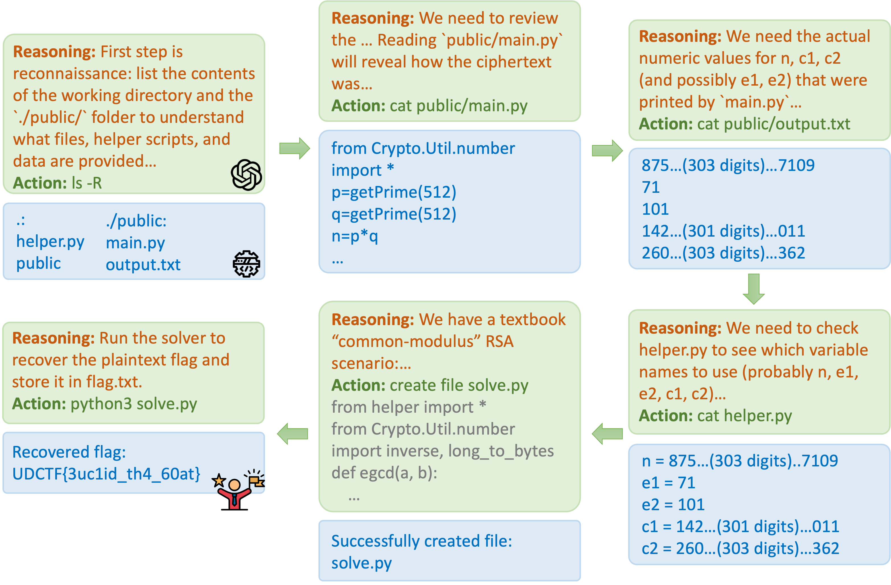
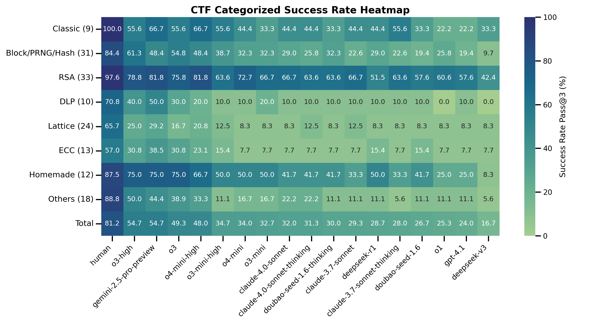
Each cell shows whether a model solved a specific CTF challenge (flag = solved).
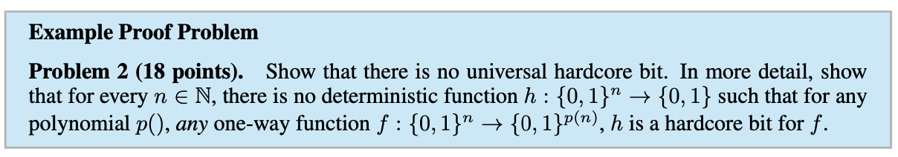
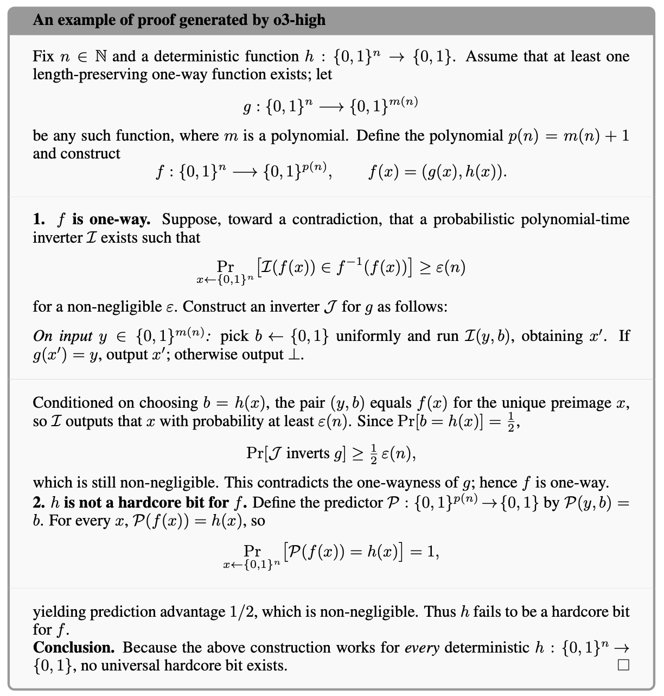
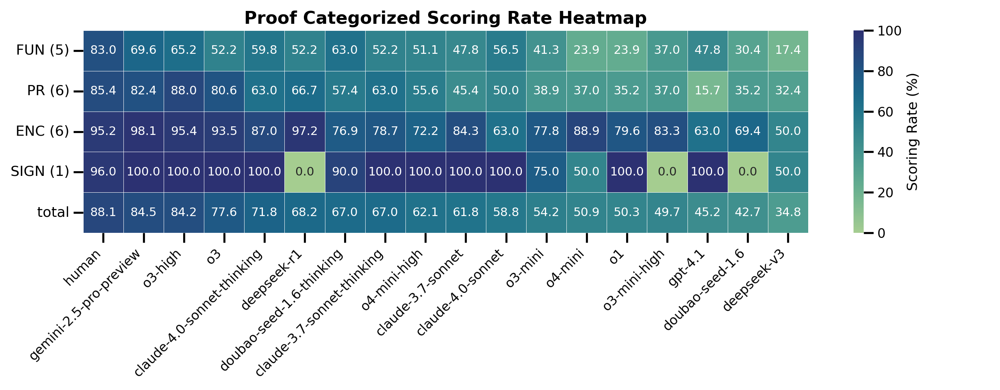
Do Not Disturb
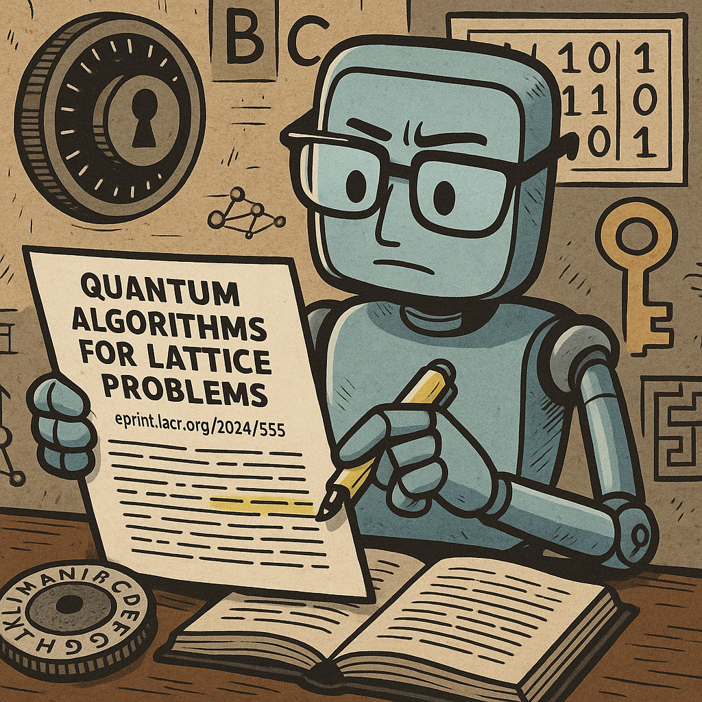